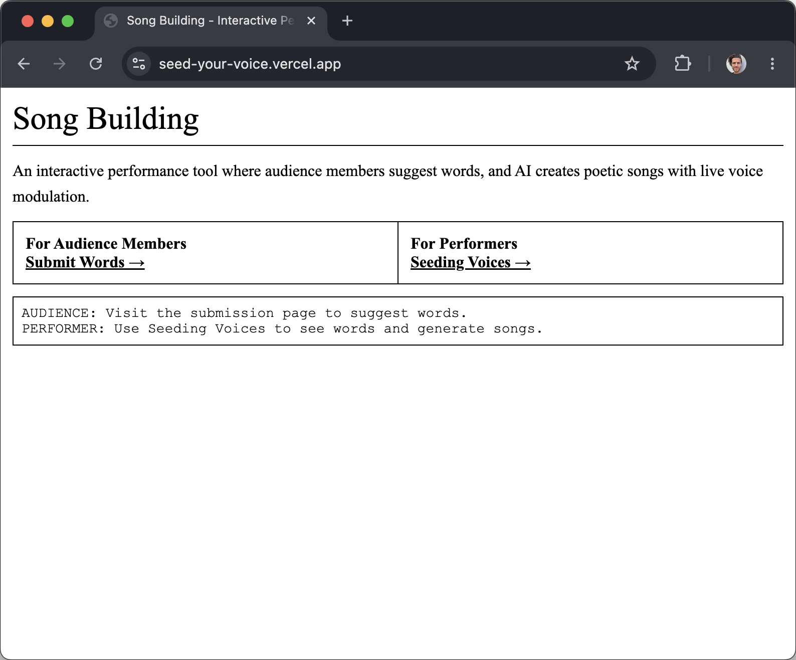

Seed Your Voice

Seed Your Voice is a small musical instrument that runs in a browser. The room supplies words. A poem grows from those words. The performer’s voice is then modulated by the poem, line by line, as if the poem itself were the synthesizer’s patch. The audience seeds. The poem germinates. The voice bends to whatever the room said it should be.
It premiered on January 5th, 2026 at TIAT in San Francisco, during Dan Gorelick’s evening on the intersection of music and technology. The brief was simple: build a web-based musical instrument over three hours. Most participants built laser harps, hand-tracking synths, gesture-based sequencers. I built something that asks the room to give me a poem before I sing.
The audience side opens on a phone. People drop in words. Frost. Honey. Mother. Outage. Verge. A small model stitches them into a short poem in something close to my voice. The performer side picks the poem up and turns it into a control surface: vowels become formants, line breaks become envelopes, the shape of the stanza becomes the shape of the sound.
What I liked about building this is how literal the metaphor became. Seed in, voice out. The instrument is unplayable without a room. It will not make a sound until at least a few people have contributed a word. Authorship gets diffuse fast. By the time I am singing into it, I am not sure whose voice the voice is.
This belongs to a longer line of work where the audience is the unseen trainer. Singulars trains its model on votes. Feed It trains its model on bodies. Seed Your Voice is the smallest, quickest version of that idea. A poem generated from the breath of the room, turned back on the room as song.
You give the instrument a word. It gives you back a stanza you then have to sing. Most rooms hand it something stranger than they meant to.